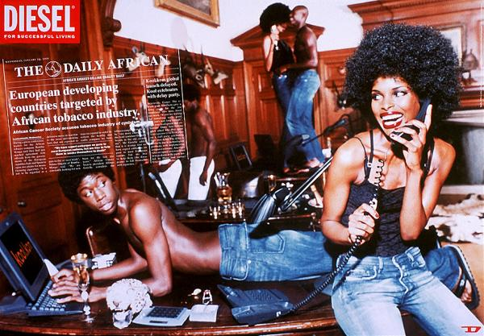
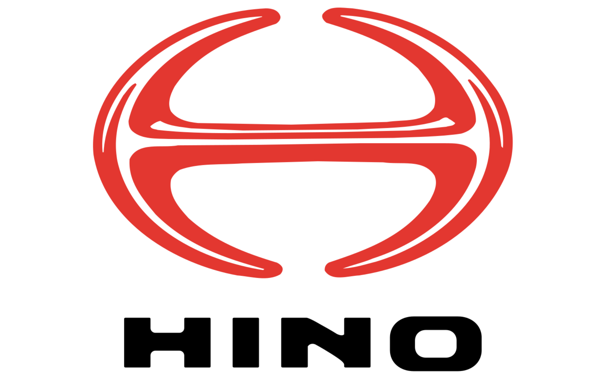

홈 > 브랜드 매거진 > 디젤
디젤 Diesel
디젤(Diesel)은 1978년 렌조 로소가 이탈리아 브레간체에서 설립한 데님 중심의 컨템포러리 패션 브랜드다. 도발적이고 실험적인 디자인으로 데님 헤리티지를 재해석하며, 마르지엘라·마르니 등을 거느린 OTB 그룹의 창립 브랜드로 성장했다.
산업 분야 패션·럭셔리 · 공개 등급 편집 검수 · 브랜드 평가 4.7 ★


한눈에 보는 브랜드
디젤(Diesel)은 1978년 렌조 로소가 이탈리아 브레간체에서 설립한 데님 중심의 컨템포러리 패션 브랜드다. 도발적이고 실험적인 디자인으로 데님 헤리티지를 재해석하며, 마르지엘라·마르니 등을 거느린 OTB 그룹의 창립 브랜드로 성장했다.
브랜드 관점
디젤은 데님을 럭셔리 패션의 언어로 끌어올린 OTB 그룹의 창립 브랜드로, 도발적 디자인이 차별점이다. 헤리티지, 핵심 제품, 모회사 구조를 함께 보면 패션·럭셔리 안에서의 위치가 또렷해진다.
시작과 성장
1978년 이탈리아에서 시작한 디젤은 창립자인 렌조 로소의 가치관을 담아 도전적이고 창의적인 정신을 반영한 제품을 생산하고 있다. 안정적인 길을 선택하지 않고 모험적이고 과감한 행보를 통해 성장한 디젤은 현재 80여 개의 국가에서 사랑받는 컨템포러리(Contemporary) 브랜드가 되었다.
브랜드 아이덴티티
디젤은 '바보'를 지향하는 브랜드이다. 이미 정립된 것을 따르지 않는 용기와 새로운 것을 끊임없이 시도하는 열정을 가진 '바보스러움'은 디젤의 브랜드 전략과 광고에 반영되어 있다.
확장 지식
이탈리아 브레간체에 본사를 둔 OTB 그룹(마르지엘라·마르니·질샌더 등 보유)의 창립 브랜드다. 데님을 럭셔리 패션의 언어로 끌어올린 브랜드로 평가된다.
제품과 서비스
데님 진과 워싱 가공을 핵심으로 의류·신발·향수·아이웨어·액세서리까지 전개한다. 'Successful Living' 슬로건 아래 스트리트와 럭셔리의 경계를 넘나드는 컬렉션을 선보인다.
사람들
창업자는 렌조 로소(Renzo Rosso)다. 그는 디젤을 모태로 한 OTB 그룹의 창업자이기도 하다.
현재 상태
타임라인
BI/CI 변천사

BI/CI 아카이브BI/CI 아카이브자주 묻는 질문
디젤는 어느 나라 브랜드인가요?
디젤는 이탈리아의 패션·럭셔리 브랜드입니다.
디젤는 언제 설립되었나요?
디젤는 1978년 설립되었습니다.
디젤의 브랜드 아이덴티티는 무엇인가요?
디젤은 '바보'를 지향하는 브랜드이다.
디젤의 대표 제품은 무엇인가요?
데님 진과 워싱 가공을 핵심으로 의류·신발·향수·아이웨어·액세서리까지 전개한다.
디젤는 현재 어떤 상태인가요?
국가: 이탈리아; 본사: 브레간체(Breganze); 산업: 패션·럭셔리
디젤의 공식 웹사이트는 어디인가요?
디젤의 공식 웹사이트는 https://www.diesel.com/ 입니다.
함께 읽을 브랜드
 패션·럭셔리 · 매거진 완성코치(COACH)
패션·럭셔리 · 매거진 완성코치(COACH)코치는 실용적 가죽 제품을 일상적 럭셔리의 영역으로 끌어올린 브랜드다. 과시적 명품보다 접근 가능한 품질과 라이프스타일 이미지를 통해 오래 쓰는 가방의 감각을 브랜드...
 패션·럭셔리 · 매거진 완성몽블랑(Montblanc)
패션·럭셔리 · 매거진 완성몽블랑(Montblanc)몽블랑은 필기구를 기록의 도구에서 성취와 품격의 상징으로 끌어올린 브랜드다. 만년필은 기능 제품이지만, 브랜드가 축적한 이미지는 서명, 의사결정, 지적 권위 같은 장...
 패션·럭셔리 · 자료 기반몽클레르(Moncler)
패션·럭셔리 · 자료 기반몽클레르(Moncler)몽클레르(Moncler)는 1952년 프랑스에서 설립돼 현재 이탈리아에 본사를 둔 럭셔리 다운재킷 브랜드이다.
 패션·럭셔리 · 자료 기반코치넬레(Coccinelle)
패션·럭셔리 · 자료 기반코치넬레(Coccinelle)코치넬레(Coccinelle)는 1978년 이탈리아 파르마 인근에서 설립된 가죽 핸드백·액세서리 브랜드이다.
 패션·럭셔리 · 매거진 완성스와치(Swatch)
패션·럭셔리 · 매거진 완성스와치(Swatch)스와치는 시계를 고가의 정밀기기에서 매일 바꿔 착용할 수 있는 패션 언어로 전환했다. 시간을 알려주는 기능보다 색, 그래픽, 컬렉션, 가벼운 가격대가 브랜드 경험의...
비비안 웨스트우드(Vivienne Westwood)는 펑크를 주류 패션으로 끌어올린 영국의 독립 럭셔리 패션 브랜드이다.
오메가(OMEGA)는 스위스 스와치 그룹 산하의 럭셔리 시계 제조 브랜드이다.
 패션·럭셔리 · 편집 검수조르지오 아르마니(GIORGIO ARMANI)
패션·럭셔리 · 편집 검수조르지오 아르마니(GIORGIO ARMANI)조르지오 아르마니(Giorgio Armani)는 1975년 밀라노에서 설립된 이탈리아 럭셔리 패션 하우스이다.